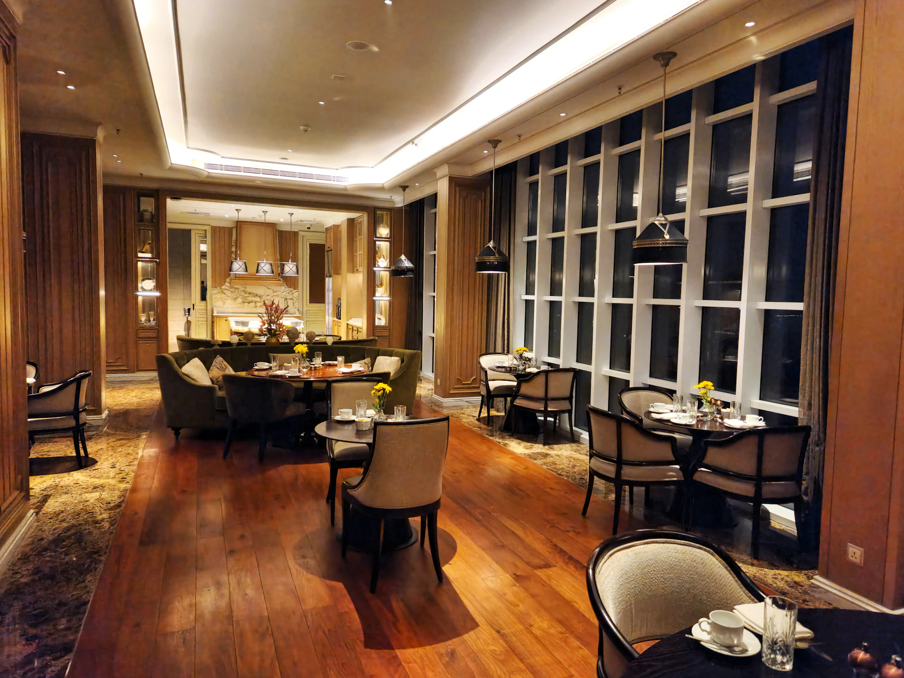
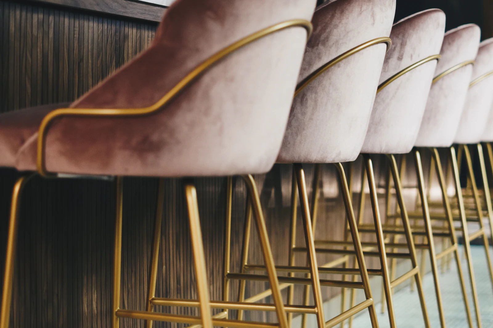
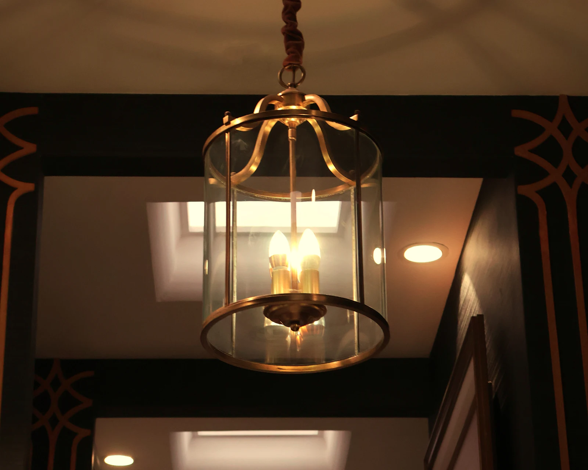
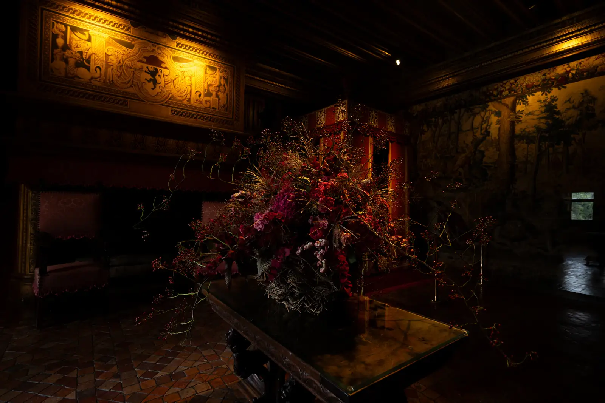
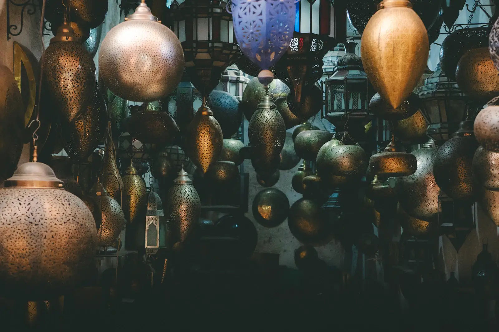
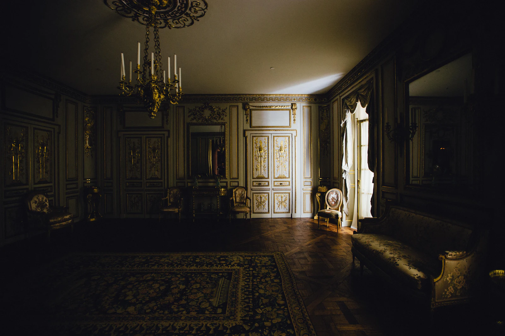

Площадь420 м²
Срок8 месяцев
СтильАр-деко
ГдеСанкт-Петербург
Задача
Ресторан, в который приходят ради вечера
Владельцы хотели место, где ужин длится три часа и никто не смотрит в телефон. Мы начали с света: в зале нет ни одного потолочного светильника над столами.
Латунь, бархат и тёмное дерево отсылают к петербургским ресторанам двадцатых. Барные стулья и фонари сделаны на заказ, а живые цветы меняют каждое утро.




«Через месяц после открытия столики бронировали на две недели вперёд.»Игорь, совладелец

Следующий проект